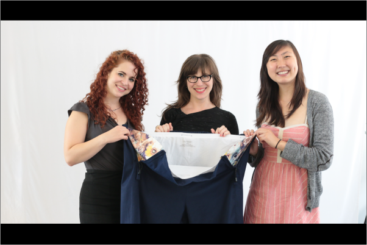
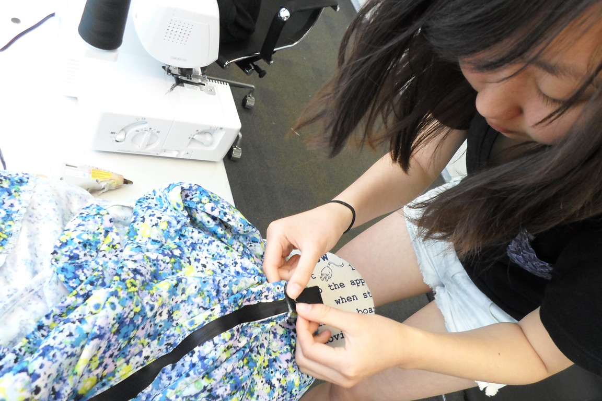
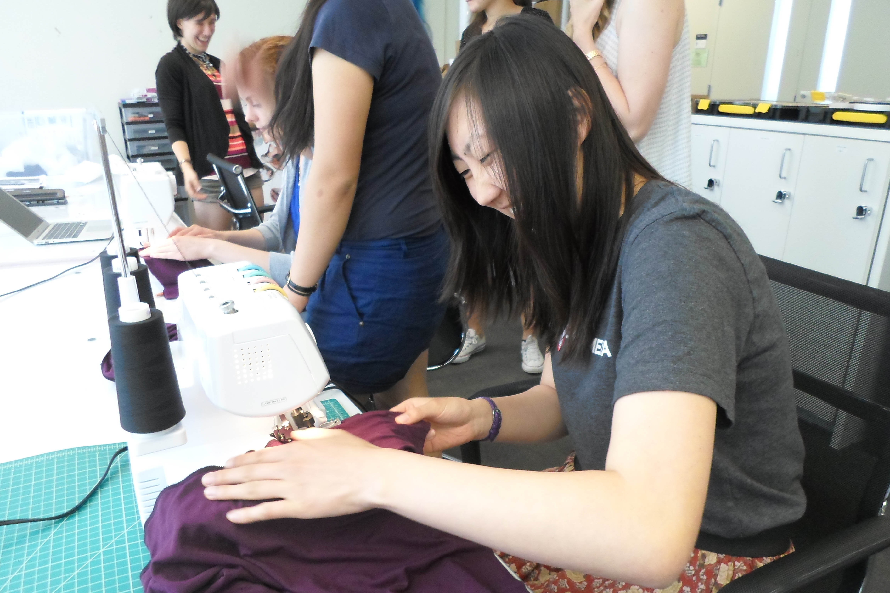
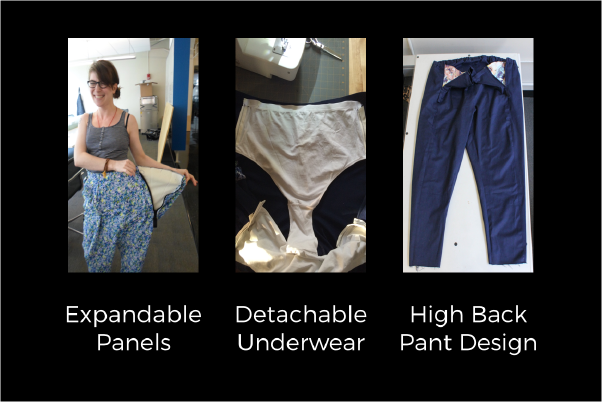
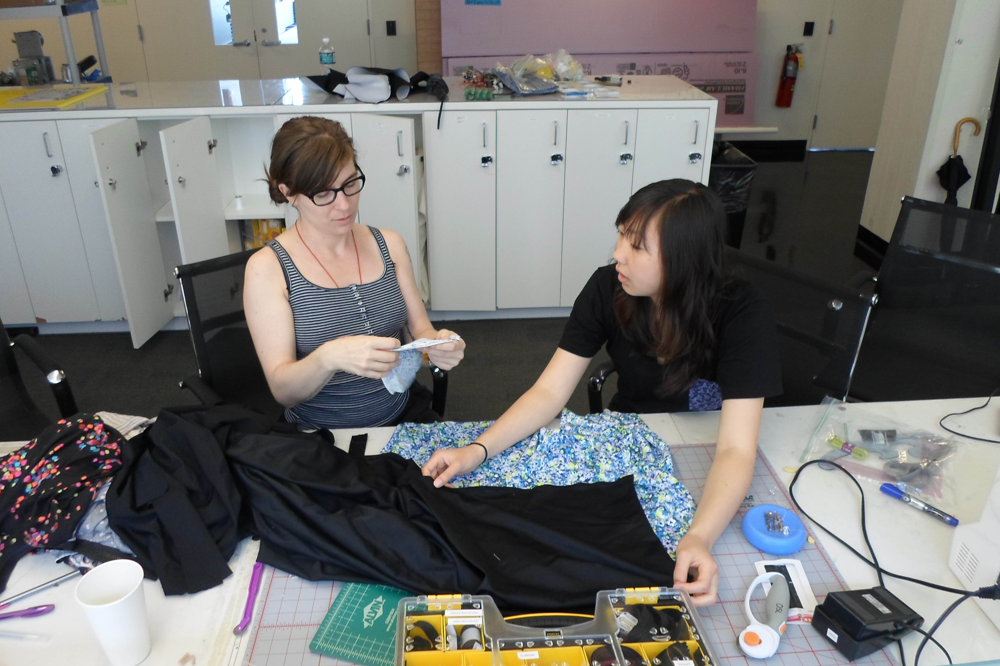
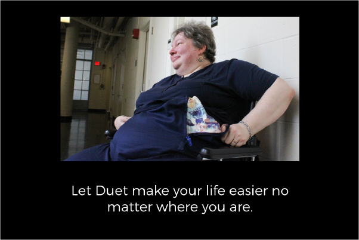
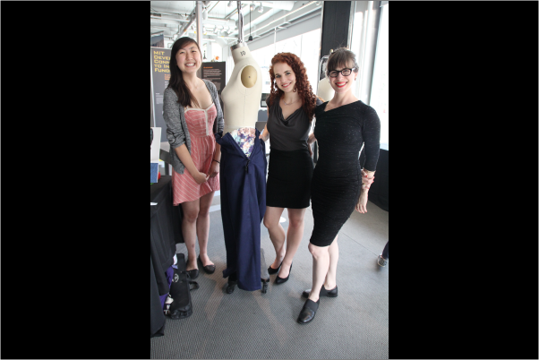

Duet







Duet is a comfortable pair of pants designed with expandable cloth panels zipped into the sides and attached underwear to make them easy to don and doff. From getting dressed in the morning to using public restrooms on the go, Duet makes your life easier no matter where you are.
Duet was made during Open Style Lab, a summer program dedicated to designing accessible clothing for people of all abilities and disabilities. Each team consisted of a designer, an engineer, and an occupational therapist. I was the engineer for my team and our client was Heidi, a woman with limb girdle muscular dystrophy Type 2B, a rare form of muscular dystrophy that affects the lower extremities. Because of her condition, Heidi had trouble donning and doffing her clothing. This became especially cumbersome when toileting in public restrooms, taking over 30 minutes to complete a single trip to the bathroom. We set out to design a pair of pants to reduce the amount of energy Heidi needed to take care of basic needs. Our final product had three key features: expandable panels to easily expand the waistband, attached underwear so the pants and underwear could be handled in a single movement, and a high back for comfort and coverage when using a wheelchair. With all of these features, Duet reduced the time she needed to don and doff by over 75%, a significant change that can impact Heidi's life greatly and give her more time and energy to do the things she loves. This is also applicable to anyone with muscular weakness, be it those recovering from injury or those who have chronic muscle weakness.
Designed the pants pattern and used a sewing machine and surger to create the pants.
Balanced each teammate's expertise in therapy, engineering, and design to create the product.
Learned how to balance a limited budget to maximize quality of the final product and save on prototyping.
Created a way to make underwear that expanded with the pants in order to speed up the dressing process by 300%.